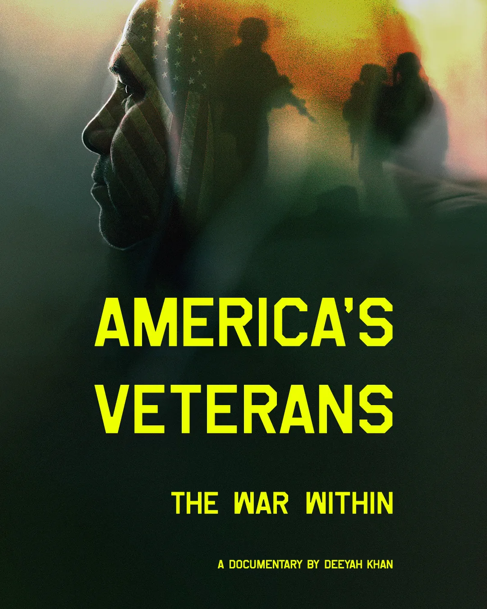
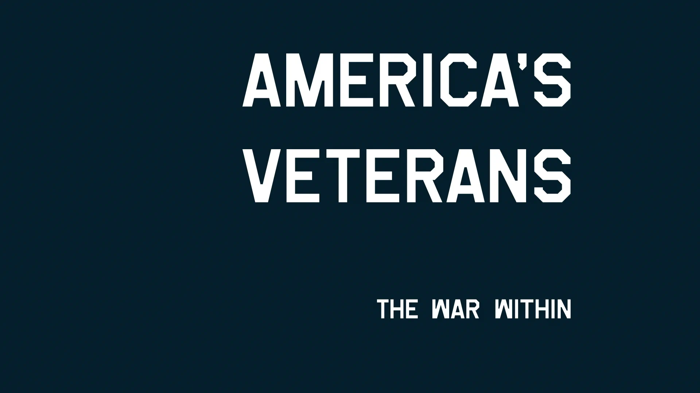
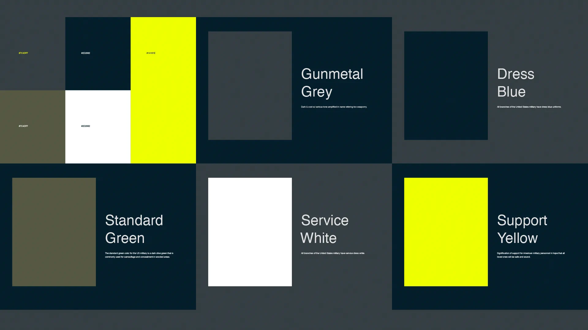
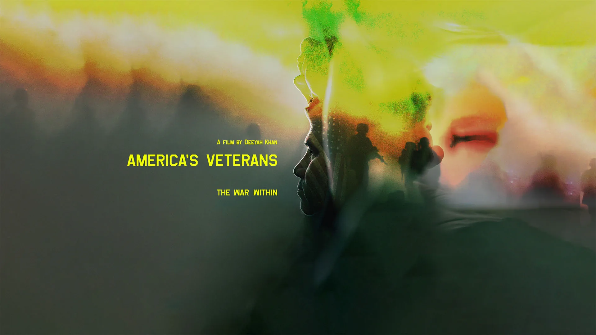
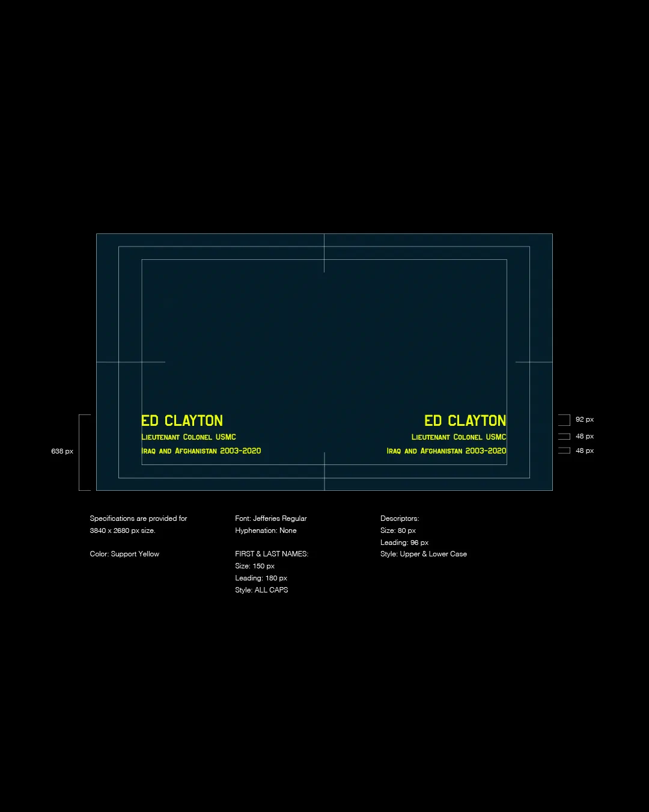
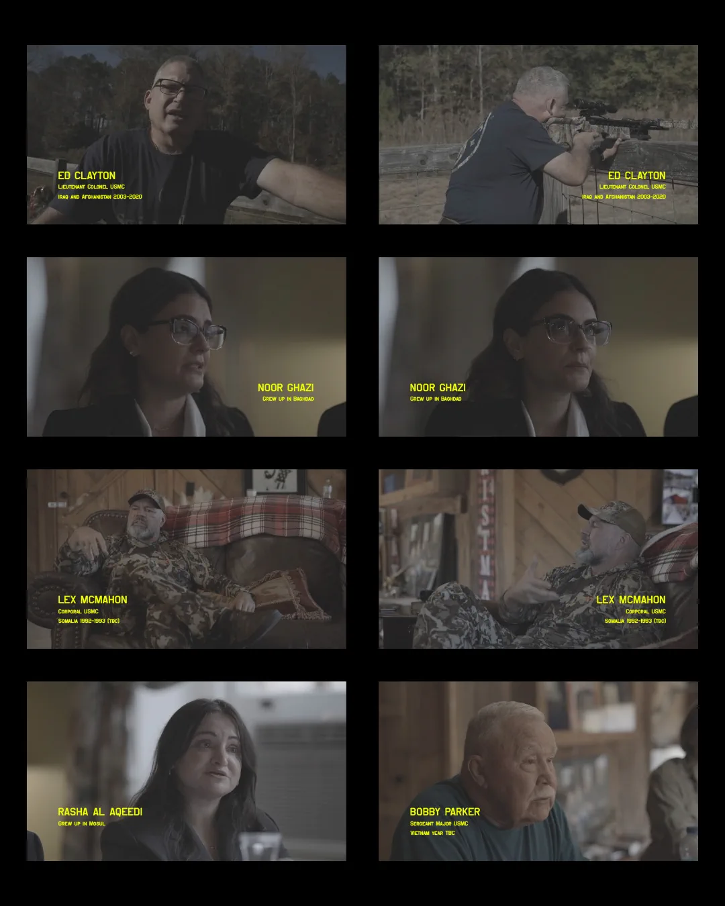
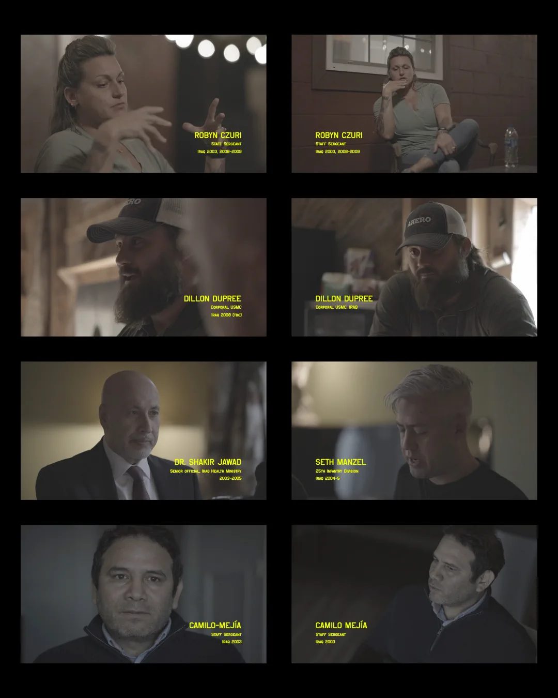
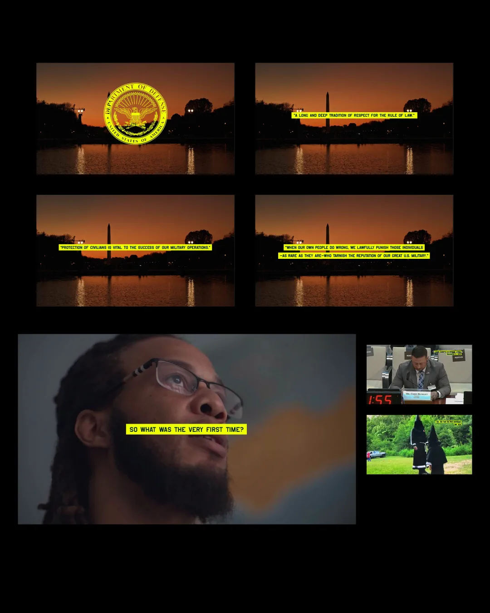
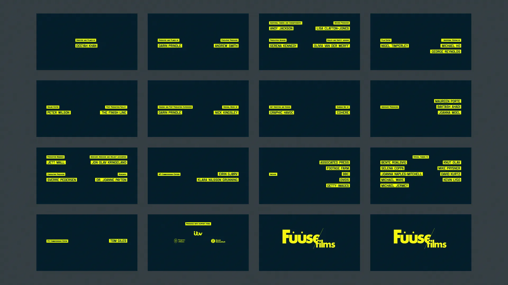
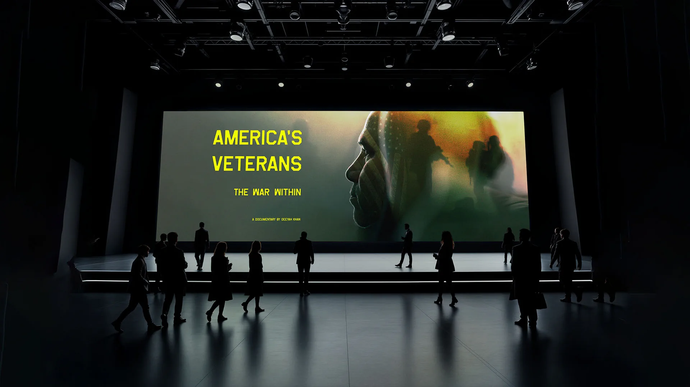

America's Veterans: The War Within
From the BAFTA and Emmy-winning documentary maker Deeyah Khan, a film about the devastating psychological aftermath of serving in the military in wartime. Travelling from Alabama to Washington, Khan speaks to veterans of America’s “War on Terror” about their combat experiences, including accounts of violence unleashed on civilians in Iraq and Afghanistan. “I lost humanity. I lost empathy. I lost compassion,” one veteran tells her.
Through deeply personal interviews, Khan’s film – part of the award-winning ITV Exposure strand – explores the dehumanising effects of war, and its long-term social impact on America and beyond – and it follows a group of veterans meeting face-to-face for the first time with some from the civilian population still emotionally scarred by the battles the US fought on their soil.
GRAPHIC HAVOC created the films logotype and tagline lockup(s), key art, style guide for color specifications and typography along with motion design for main title, name supers, captions, and end credits. Additional promotional and advertising assets were delivered based upon the films look/feel.



Film Identity
Sometimes the hardest part of building an identity system is knowing where to stop. For America's Veterans: The War Within, the visual language needed to support a deeply human story without competing with it.
GRAPHIC HAVOC developed the logotype, key art, typography, and color system around restraint, clarity, and meaning. The palette was developed in collaboration with Fuuse/films and informed by conversations with current and former members of the military so that both the colors and their names carried appropriate significance. Support Yellow, for example, draws from the long-standing yellow ribbon tradition and the hope that those serving return home safely.





Motion Design
The motion system extended the same restrained visual language into the film itself. GRAPHIC HAVOC designed main titles, name supers, supporting titles, captions, and end credits using the identity's typography, Support Yellow, and Dress Blue.
The system was built to remain legible over varied documentary footage while giving names, quotations, and production credits a consistent visual hierarchy without overpowering the people and stories on screen.

